토목사업
KUMHO E&C
Engineering & construction
도시와 국토를 잇는 공간 예술, 금호건설의 토목사업
overview
국가 발전과 번영을 위한 도로건설
중앙과 주변을 긴밀하게 연결하는 ‘길’이 존재하기에 인류의 문명이 탄생할 수 있었습니다. 금호건설이 건설한 각종 도로와 고속도로가 전국을 빈틈없이 연결하며 이동시간은 단축되고 국가 경쟁력은 높아집니다. 국가의 대동맥인 고속도로는 각종 물자 수송 및 전시 상황에 빠른 병력수송을 가능하게 하여 국가 안보에도 이바지합니다 또한 금호건설은 도로 및 교량분야의 기술력을 바탕으로 해외로도 진출하여 여러 나라에서 다리, 고속도로, 도로 등을 건설하며 글로벌로 나아가는 금호건설의 저력을 보여주고있습니다.
국토개발과 국가경제의 희망 인프라
21세기 새로운 교통 혁명을 가져온 고속철도 분야에서 최고의 기술력과 시공 경험을 보유하고 있습니다. 국내 고속철도 건설 사업 최다 구간 참여 실적사로서 선진 기계화 시공 기술 및 안전 시공 기술을 접목해 대한민국을 세계 다섯 번째 고속철도 보유 국가의 반열에 올려놓는 데 크게 기여했습니다. 서울을 비롯해 전국 대도시 지하철 및 주요 철도망 건설 사업에 적극 참여하여 축적한 최고의 설계 및 시공 능력을 바탕으로 삶의 편의성과 산업의 효율성을 극대화합니다. 최근 수도권광역철도(GTX-A) 사업을 통해 해당 분야 최고의 기술력을 재확인한 것은 물론 싱가포르 지하철 등 해외 시장을 적극 개척하고 있습니다.
도로
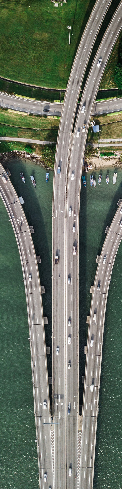- 도로사업
- 금호건설은 도로 건설에 있어 다년간의 노하우와 기술력으로 국내ㆍ외에서 인정받는 글로벌 기업입니다.
-
- 영암해남진입도로2
- 위치: 전라남도 영암군 삼호읍 일원 공사기간: 2015-12 ~ 2022-12 규모: 도로 L=4.516km
- 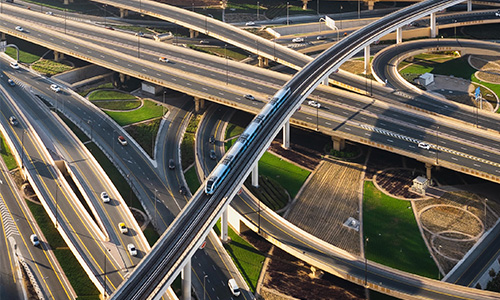
-
- 삼장산청국도건설
- 위치: 경상남도 산청군 금서면 일원 공사기간: 2016-04 ~ 2022-09 규모: 국도 L=6.00km, B=11.5~13.0m
-
- 대구순환도로4공구
- 위치: 경상북도 칠곡군 동명면 경북대로 공사기간: 2017-03 ~ 2022-05 규모: 고속국도 L=3.58km, B=20.0m
- 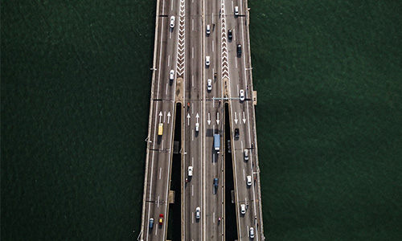
-
- 이천오산1공구
- 위치: 경기도 화성시 ~ 용인시 일원 공사기간: 2017-03 ~ 2022-05 규모: 고속국도 L=15.6km, B=23.4m
- 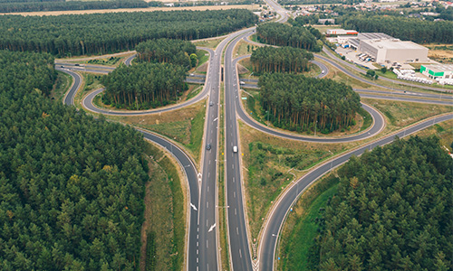
-
- 강촌창촌간도로
- 위치: 강원도 춘천시 남산면 강촌리 ~ 창촌리 일원 공사기간: 2009-02 ~ 2019-12 규모: 지방도 확포장(L=5.3km) 교량 5개소, 터널 1개소
-
- 제2외곽순환고속도로(인천~김포)
- 위치: 인천광역시 서구 경서동 일원 공사기간: 2012-03 ~ 2017-03 규모: 연장 : L=2.92km(6차로) / 토공 : 437,011m3
철도
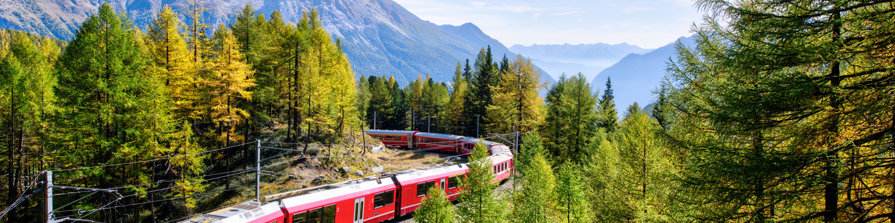- 철도사업
- 금호건설은 철도 건설에 있어 다년간의 노하우와 기술력으로 국내ㆍ외에서 인정받는 글로벌 기업입니다.
-
- 당고개진접2공구
- 위치: 경기도 남양주시 송산로 공사기간: 2017-03 ~ 2022-06 규모: 총 연장 L=4.633km, 터널 4.424km, 개착박스 199m
-
- 울산포항복선전철6공구
- 위치: 경상북도 경주시 광명동, 충효동, 현곡면 일원 공사기간: 2009-04 ~ 2014-04
- 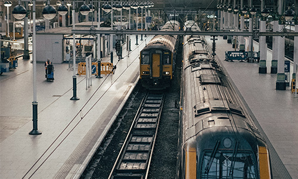
-
- 여주 복선전철 제9공구 노반건설공사
- 위치: 경기도 여주군 능서면 용은리 ~ 여주읍 교리 일대 공사기간: 2009-04 ~ 2014-04 규모: 연장 1.49 KM (Ramp - A기준)
- 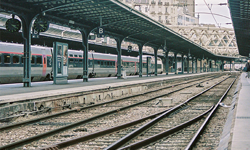
-
- 경부선 일부 선형개량 노반공사
- 위치: 충북 영동군 황간면, 추풍령면 일원 공사기간: 2003-12 ~ 2006-12 규모: L = 4.3km, B = 12.0m
- 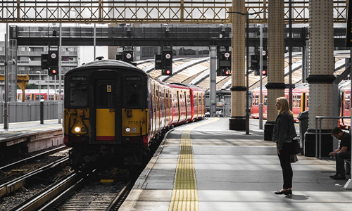
-
- 부산지하철 3호선 310공구 토목공사
- 위치: 부산광역시 북구 덕천동 일원 공사기간: 1997-12 ~ 2005-11 규모: 지하3층 철근콘크리트조( L=841m)
- 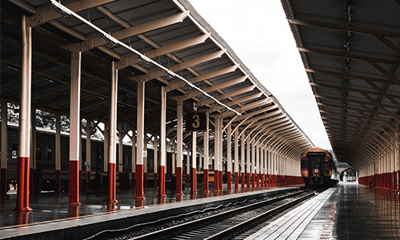
-
- 경부고속철도 제1-2공구 노반시설공사
- 위치: 경기도 광명시 일직동 ~ 경기도 군포시 둔대동 공사기간: 1994-12 ~ 2002-12 규모: 연장 : 10.101Km
- 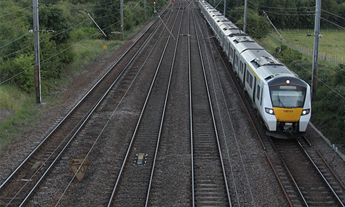
택지/항만
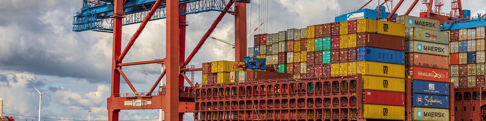- 택지/항만사업
- 금호건설은 택지/항만 건설에 있어 첨단 기술로 인정받는 굴지의 기업입니다.
-
- 장항항 물양장 축조공사
- 위치: 충남 서천군 장항읍 장암리 일원 공사기간: 2010-11 ~ 2016-12 규모: 접안시설 : 820m, 함선 및 도교 : 1기, 등대 : 2기
- 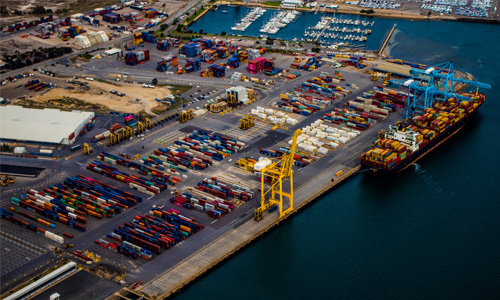
-
- 행정중심복합도시 2-1생활권 조성공사
- 위치: 세종특별자치시 다정동 산43번지 일원 공사기간: 2012-11 ~ 2017-12 규모: 부지조성 1,719천㎡, 흙깎기 4,750 천㎥
- 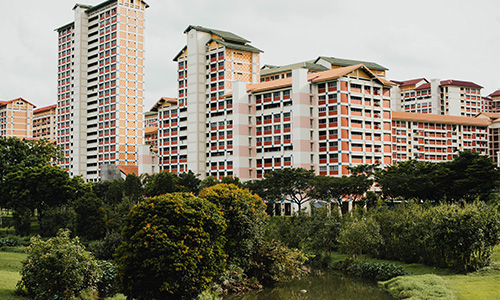
-
- 울산 신항만
- 위치: 울산 남구 공사기간: 2004-05 - 2009-04 규모: 컨테이너 및 다목적 부두 920m(케이슨식)
-
- 여천 오일탱크 터미널
- 위치: 전남 여수 공사기간: 1992-07 - 1995-10 규모: 접안길이 4,500m, 매립면적 845,059㎡
- 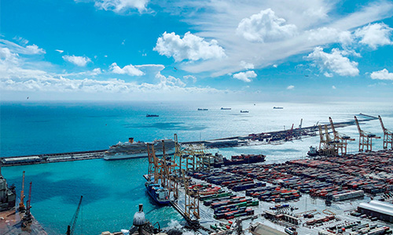
-
- 대도 도서특화사업
- 위치: 경상남도 하동군 금남면 대송리 일원 공사기간: 2007-08 ~ 2013-07 규모: 사업면적 : 446,136㎡
- 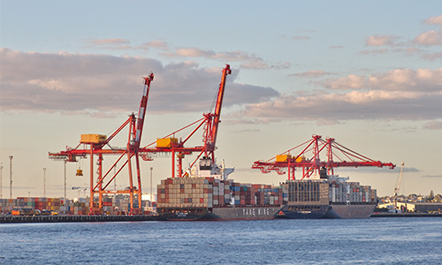
-
- 에코델타시티 1단계 3공구 조성공사
- 위치: 부산 강서구 공사기간: 2015-03 - 2021-08 규모: 부지조성 720,000㎡